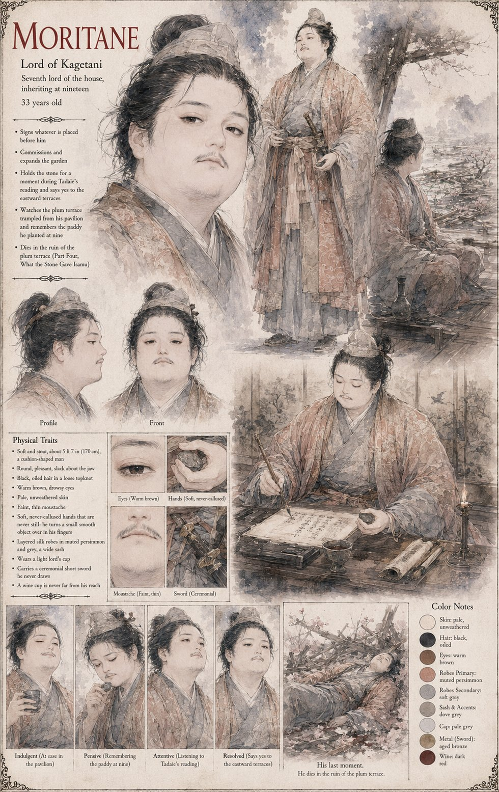

Moritane
Lord of Kagetani · seventh lord of his house, inheriting at nineteen · commissioner of the Garden of Kagetani · 33 by his sheet
The seventh lord of Kagetani, who inherited the domain at nineteen from a father he barely resembled and wants from it only his garden, his wine and a shaded cushion from which to enjoy them. He signs whatever is placed before him. In his twenty-second year he commissions the garden, and it grows until it holds a full third of the arable land nearest the castle, with an open pavilion from which he can watch it. At the start of every season Norimasa recites its costs to him, and every season he is interrupted, with Sadatomo keeping his supply of small things to turn over replenished so that nobody has to notice the habit.
The stone comes to him through the court diviner Tadaie, who holds it while he reads the omens for the garden’s eastward expansion. Moritane holds it for a moment during the reading and says yes. The manuscript’s verdict on that yes is the line quoted below, and the ground it takes is the ground of forty-one households. Years later he watches the plum terrace trampled from his pavilion and remembers the paddy he planted at nine, ankle-deep and unsupervised, in his grandmother’s keeping. He dies in the ruin of the plum terrace (Part Four, What the Stone Gave Isamu), and Norimasa is the one who finds him.
The manuscript gives his age only by implication, nineteen on inheriting and eleven years on at the first reading; the sheet prints 33. Its soft, stout build of about 5 ft 7 in, round slack-jawed face, drowsy warm-brown eyes, faint thin moustache, loose oiled topknot, layered silk robes in muted persimmon and grey with a pale grey cap, ceremonial short sword he never draws and wine cup always within reach are the pack’s, and the habit of turning a small smooth object in soft, never-callused hands is the manuscript’s. The sheet’s panels are Indulgent (at ease in the pavilion), Pensive (remembering the paddy at nine), Attentive (listening to Tadaie’s reading) and Resolved (says yes to the eastward terraces); its scenes show him writing at a low table with the object in his other hand, sitting on the pavilion above the ruined terraces, and lying dead among the broken plum branches, captioned His last moment.
“It was not conviction that carried the eastward terraces past eleven years of comfortable inertia. It was the simple absence of anything left inside him to argue the other side.”